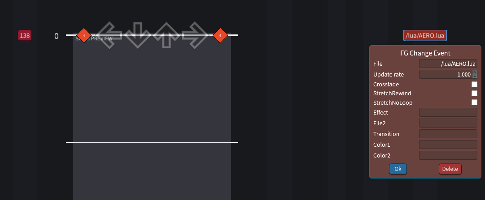
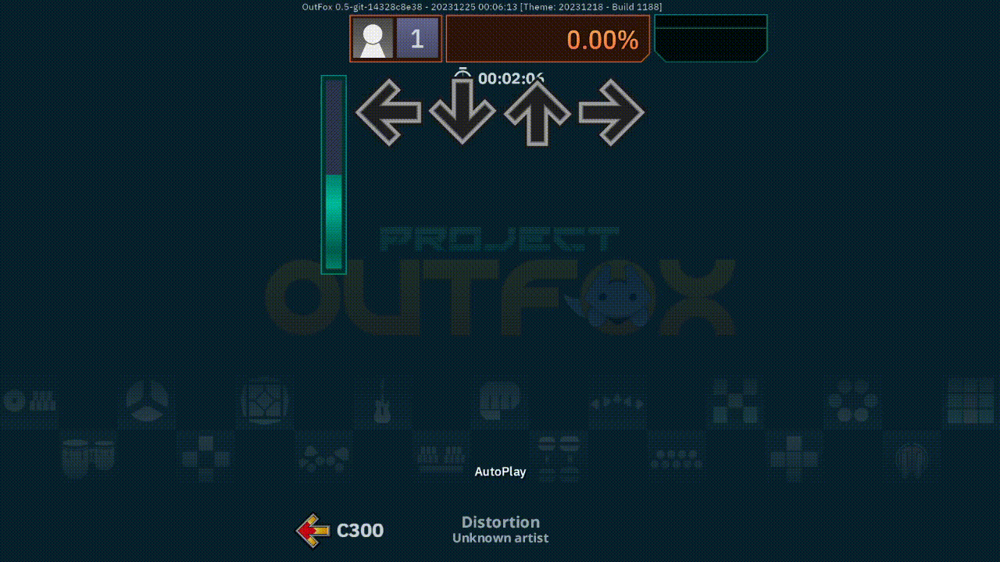

Aero mod template docs
Setting Up A Mod Chart.
To set up Aero place the /lua folder in your chart folder, then set the chart to change FG on the 0th beat to /lua/AERO.lua. You can do this in SMEditor using the edit timing button, like so:

Once you did that you can begin making your mod file, write your code within the mod function in /lua/main.lua
Global Variables
These are variables you can use throughout your mod chart, these are generally things that are used often but are annoying to initiate as a simple variable. AERO takes the lead and preinitiates these for easy access.
-
Actors- A dictionary containing the actors defined usingActors.xml -
Notefield- The Player1 notefield actor -
PlayerOptions- The playeroptions actor. If you want to change player options useeaseorSetPlayerOptionelse it will not changepo_known_states -
po_known_states- A dictionary holding all the player options current values. This table is vital for easing as its used as the initial state of the player option. You can alter this table like so:po_known_states["Mod"] = Value
Global Functions
Functions that provide all the functionality required in making a mod chart.
-
beatevent(x, func)- Calls func on beat x with x as a parameter. Use this to run functions at specific beats. -
be(x, func)- Alias to beatevent. -
GetCurrentBeat()- Returns the current beat as a float. -
GetSongBeatsPerSecond()- Returns beats per second. -
GetSongBeatsPerMinute()- Returns beats per minute. -
BeatsToSeconds(x)- Coverts the amount of beats to seconds. Useful for using the standard stepmania easing functions on actors. -
Lerp(a, b, t)- Lerp a to value b with t as percent (between 0 and 1) -
ease(x, t, easingstyle, value, mod)- Probably the most essential function in this list. Ease will interpolate the player mod 'mod' on beat x to value using easing style as the style. -
CreateFrameEvent(func)- Aero will run f every frame (with no parameters) until the function returns 1 or true. -
CreatePlayerOption(Name, func)- Defines a new player option as Name, which you can then use ease to alter. Note that the default value of this player option will be 0, if you want to change this look atpo_known_states -
SetPlayerOption(Option, Value)- Sets the player option to value. -
SetDefaultPlayerOptions()- Sets every player option supported by aero to 0, except for MMod and CMod which are set to 550, note the final result will be CMod.
Defining New Actors.
Aero uses a file called Actors.xml to create new actors in the mod chart, since this is an XML file you can initiate actors within each other, creating an easy way to keep track of what is layered and where. Note that actors defined after each other will be over the previous layer. All actors will be placed within the dictionary Actors which you can then refrence using their name, like so: Actors.MyCoolSprite or Actors["MyCoolSprite"]
You can also set properties of an actor within this file, here is an example:
return [[
<ActorFrame Name="MainActorFrame">
<Sprite Name="MyCoolSprite" Texture="/lua/sprites/bg.png"></Sprite>
</ActorFrame>
]]
This example will create a Sprite with the texture /lua/sprites/bg.png within an ActorFrame.
You can also call Fullscreen() and Center() using the Actors.xml like so:
<Sprite Name="MyCoolSprite" Texture="/lua/sprites/bg.png" Center="true" FullScreen="true"></Sprite>
Easing Styles.
Here is a list of every easing style you can use with ease
- bounce
- trie
- pop
- tap
- pulse
- spike
- inverse
- instant
- linear
- inQuad
- outQuad
- inOutQuad
- inCubic
- outCubic
- inOutCubic
- inQuart
- outQuart
- inOutQuart
- inQuint
- outQuint
- inOutQuint
- inExpo
- outExpo
- inOutExpo
- inCirc
- outCirc
- inOutCirc
- inElastic
- outElastic
- inOutElastic
- inBack
- outBack
- inOutBack
- inBounce
- outBounce
- inOutBounce
- inBounce
- outBounce
- inOutBounce
- inSine
- outSine
- inOutSine
Mod Example And Explanation.
function mod()
ease(0, 2, outQuad, 1, "Dark")
ease(0, 2, outQuad, 4, "Drunk")
ease(0, 2, outQuad, 7, "Tipsy")
ease(0, 2, outQuad, math.pi * 2, "ConfusionOffset")
end
So, what does this code do? Well we've got 4 ease functions on beat 0 each taking 2 beats.
-
Dark sets the receptors opacity to 0 making them invisible.
-
Drunk begins moving the receptors left and right.
-
Tipsy makes the receptors sway up and down in a wave.
-
ConfusionOffset rotates the receptors 360 degrees.
Overall we get this neat note explosion effect: 